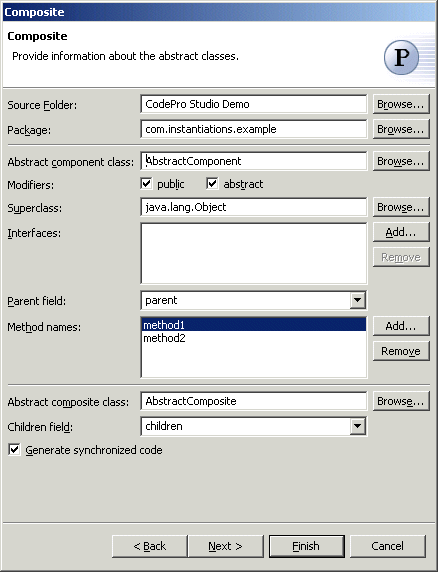
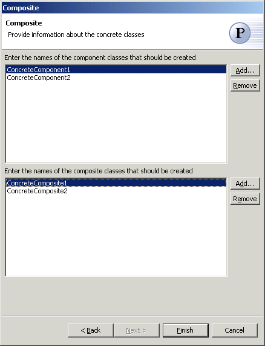

Composite Pattern
The  Composite Pattern composes objects into tree structures to represent whole-part
hierarchies. Composite lets clients treat individual objects and compositions of objects
uniformly.
Composite Pattern composes objects into tree structures to represent whole-part
hierarchies. Composite lets clients treat individual objects and compositions of objects
uniformly.
Wizard

| Option | Description | Default |
| Source folder | Enter a source folder for the new class. Either type a valid source folder path or click Browse to select a source folder via a dialog. | The source folder of the element that was selected when the wizard was started. |
| Package | Enter a package to contain the new class. Either type a valid package name or click Browse to select a package via a dialog. | The package of the element that was selected when the wizard was started. |
| Abstract component class name | Type or click Browse to select an abstract component class. | <AbstractComponent> |
| Modifiers | Select one or more access modifiers for the new class.
|
public, abstract |
| Superclass | Type or click Browse to select a superclass for the abstract component class. | <java.lang.Object> |
| Interfaces | Click Add to choose interfaces that the component classes implement. | <blank> |
| Parent field | Type or select the name of the field that will contain the parent of the component | <parent> |
| Method names | Click Add to enter names of sample methods that should be created in the component and composite classes | <blank> |
| Abstract composite class name | Type or click Browse to select a abstract composite class. | <AbstractComposite> |
| Children field | Type or select the name of the field that will contain the children of the component | <parent> |
| Command names | Click Add to enter the names of the commands that should be created | <children> |
| Generate synchronized code | Determines whether access to the children is synchronized . |
<true> |

| Option | Description | Default |
| Component classes | Click Add to enter names of the component classes that should be created. | <blank> |
| Composite classes | Click Add to enter names of the composite classes that should be created. | <blank> |
Applicability
Use the Composite pattern when
- you want to represent part-whole hierarchies of objects.
- you want clients to be able to ignore the difference between compositions of objects and individual objects. Clients will treat all objects in the composite structure uniformly.
Additional Resources
http://c2.com/cgi/wiki?CompositePattern